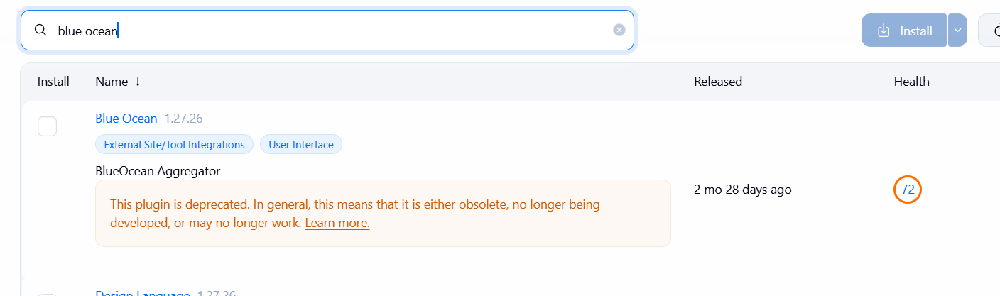
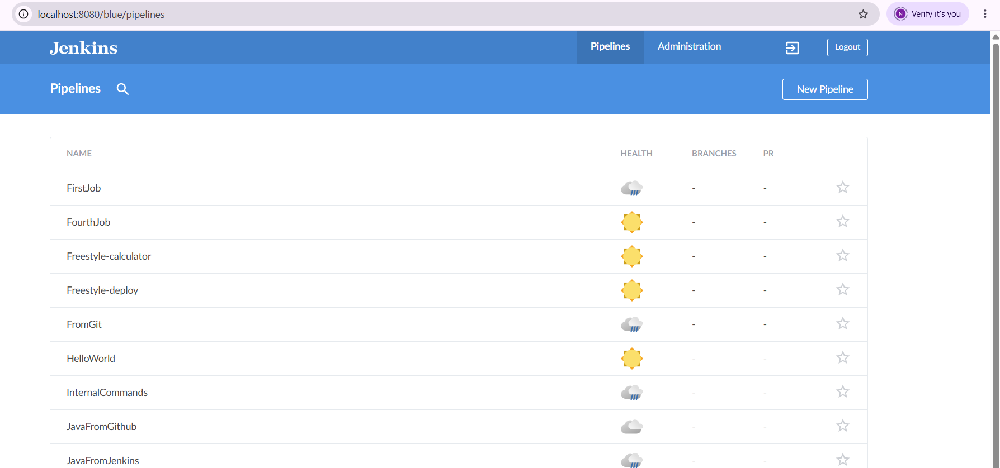

3. Install Blue Ocean
Blue Ocean is a plugin that adds a second, more visual interface to Jenkins, made for pipelines: a graph of the stages, logs per step, clear tabs for tests and artifacts, and a graphical editor to create pipelines without typing Groovy.
So why study it?
- You will meet it at work. Deprecated does not mean removed: thousands of company Jenkins servers still run Blue Ocean, and many tutorials, books and forum answers use it. Companies update slowly; you must be able to read it on day one.
- It makes a pipeline visible. Its editor shows that a Jenkinsfile is only stages and steps: you build one with buttons and read the code it writes (part 5), including
parallel, which you have not written yet. - It brings ideas that stay. The pipeline Blue Ocean creates is a multibranch pipeline that builds every branch and every pull request (part 6). That idea is everywhere today: in Jenkins without Blue Ocean, in GitHub Actions, in GitLab CI.
- Handling a deprecated tool is a DevOps skill. Tools age: Node 14,
actions/checkout@v3, Log4j 2.14 (chapter 3). A DevOps engineer recognises the warning, measures the risk, and plans the move to the replacement. That is exactly what you do in part 7, with Pipeline Graph View.
Step 1: Install the plugin
- Manage Jenkins › Plugins › Available plugins.
- Search
Blue Ocean. Tick the plugin called exactly Blue Ocean. It brings about twenty other plugins with it: this is normal. Jenkins may show a deprecated warning next to it: this is expected. - Click Install and wait until every line says Success.

Step 2: Restart Jenkins
First check that every line of the installation page says Success.
Docker: run docker restart jenkins-local (or open http://localhost:8080/restart and click Yes). Wait about one minute and log in again.
Windows: if you open http://localhost:8080/restart, Jenkins answers Jenkins cannot restart itself as currently configured. This is normal: you started it from a terminal with java -jar, so nothing can start it again for you. Restart it by hand:
- Go to the terminal window (Command Prompt) where Jenkins is running.
- Press Ctrl + C. If the terminal asks Terminate batch job (Y/N)?, type Y. Jenkins stops.
- Start it again in the same window, with the same commands as usual:
set JENKINS_HOME=C:\jenkinsLab\home
java -jar C:\jenkinsLab\jenkins.warUse your paths: the folder of your jenkins.war, and your JENKINS_HOME if you set one (skip the first line if you never did). Wait for Jenkins is fully up and running, then open http://localhost:8080 and log in.
Optional (Windows): a start file, so Jenkins can restart by itself
Tired of Ctrl + C? Create a file start-jenkins.bat next to your jenkins.war, paste the lines below (with your own paths), and from now on double-click it to start Jenkins.
@echo off
set JENKINS_HOME=C:\jenkinsLab\home
:loop
java -Dhudson.lifecycle=hudson.lifecycle.ExitLifecycle -jar C:\jenkinsLab\jenkins.war
echo Jenkins stopped. Restarting in 5 seconds (close this window to stop it)...
timeout /t 5
goto loop- The option
-Dhudson.lifecycle=hudson.lifecycle.ExitLifecycletells Jenkins: to restart, just stop; something outside will start me again. The Restart button now works. :loop…goto loopis that "something outside": every time Jenkins stops, the file starts it again after 5 seconds.- If your Jenkins still refuses to restart, open
http://localhost:8080/safeExit: Jenkins stops cleanly and the file starts it again. - To stop Jenkins for real, close the window.
On a real server, Jenkins runs as a service (the Windows installer does this) or in a container: the system or Docker restarts it, exactly what this little loop imitates.
Step 3: Open it
Open this address in your browser:
http://localhost:8080/blueYou see the list of your jobs in the Blue Ocean style. On older Jenkins versions, the dashboard also has a link Open Blue Ocean in the left menu; on recent versions this link is often missing: the address above always works. Add it to your browser favourites.
To go back to the classic interface, click the icon with an arrow at the top right, next to Logout (Go to classic).
